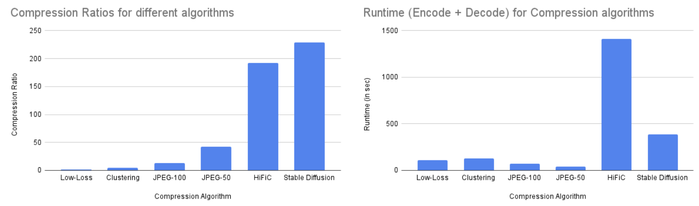
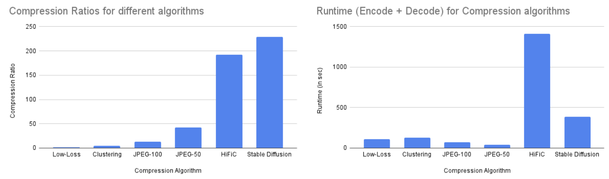

Image Compression Comparative Study
Ritu Raut
Ajay Joshi
About
We conducted a comprehensive study on the state of the art classical, machine learning, and deep learning based methods. We plan to evaluate the recent image compression methods based on diversified evaluation measures like compression ratio, the bit rate, and the peak signal-to-noise ratio, summarize their merits, and create hybrid approaches for specific design choices.
Demo
Interactive Demo comparing different image compression methods

Code
Our implementation of these algorithm to evaluate them, and more details are available as part of the Image Compression repo at Image-Compression. Explore our model implementations on your own images using the instructions given in the above link.
Results and Analysis
The following shows scores for the studied algorithms, across each metric, where higher is better for PSNR, SSIM, Compression ration and vice versa for runtime.
We utilised the Image Compression Benchmark dataset for our evaluation. It consists of 15 images of high quality and size equal to 450MB.
 

The study shows that the state of the art learning based models are giving substantially higher compression ration than the classical algorithms. However, the classical algorithms are giving better PSNR and SSIM scores and are also faster than the learning based models. Under subjective evaluation, of the learning based models, the image quality seems to be better than the classical algorithms. This also shows PSNR and SSIM are not good indicator metrics of quality for generative methods, as they have lower scores even though the images are better.